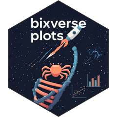

Density plot worker
dot-plot_density.RdDensity plot worker
Usage
.plot_density(
df,
grouping_column,
variable,
outlier_groups,
var_name = NULL,
log_scale = FALSE,
adjust_position_label = 0,
palette = "main"
)Arguments
- df
data.table. Plotting-ready data.
- grouping_column
Character. Column used to group the densities.
- variable
Character. Numeric column to plot on the x-axis.
- outlier_groups
data.table. Outlier groups to label, with columns
group_idandgroup_median.- var_name
Character. x-axis label (default: NULL).
- log_scale
Logical. Apply a log10 x-axis (default: FALSE).
- adjust_position_label
Numeric. x-offset for the labels (default: 0).
- palette
String. Discrete palette for the group fills and labels, see
bx_colors().
Value
A ggplot object.